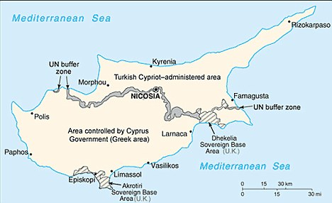
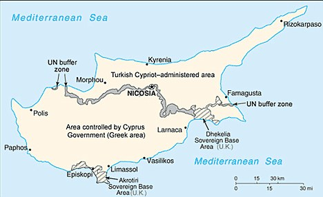

/BOT_Flags/Flag_of_the_United_Kingdom.png) 

| Quick Facts on Akrotiri and Dhekelia | |
|---|---|
| Capital (Main Base) | Episkopi Cantonment (Akrotiri) |
| Location | Southern (Akrotiri) and Eastern Cyprus (Dhekelia) |
| Overall Land Size | 98 square miles (rough estimate) |
| Population | Approx. 15,700+; population mostly consists of native-Cypriot citizens, UK military personnels and their families, and support staff |
| Year Established as a British 'crown colony' | 1960 (by the 'Treaty of Establishment') |
| [Official] Motto | N/A |